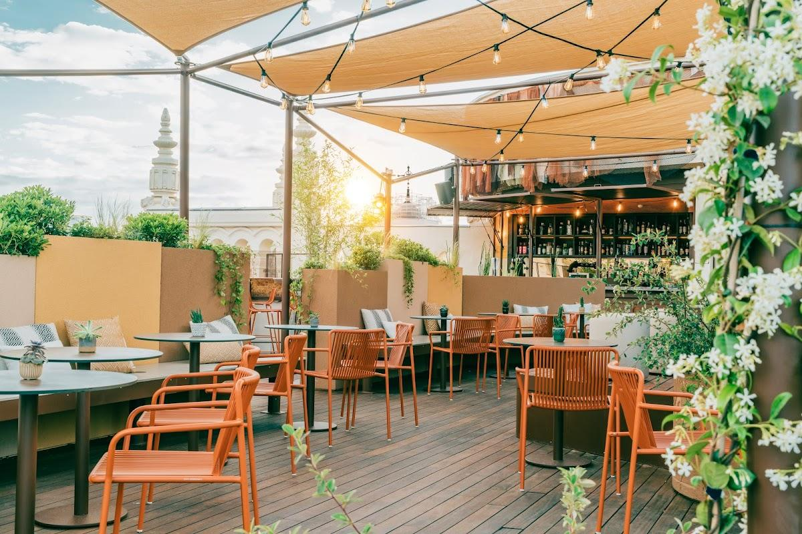
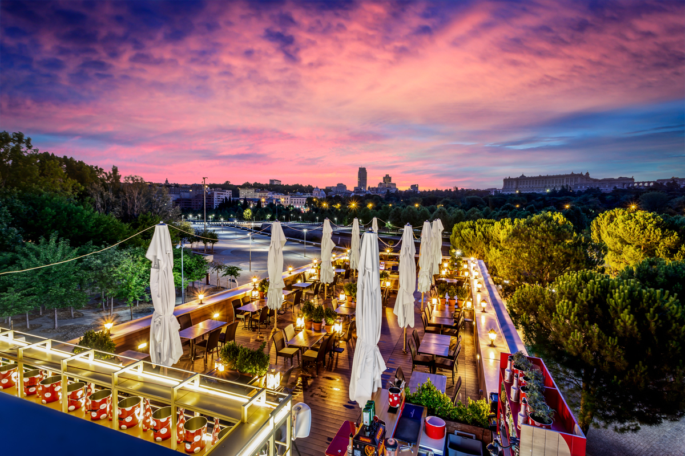

Red Hot Chili Peppers (en adelante RHCP) nace de un viaje a Mexico, del que volvimos convencidos de que la tradicional taberna mexicana podía adaptarse a la cocina española.
El reto era hacer recetas españolas en clave ¨RHCP¨. En definitiva, una forma de comer de tapas con todo bien ensartado, aromas a brasas y sabores nuestros.
¨RHCP¨ es un espacio inspirado en la tradicional taberna mexicana pueblerina, del mas estilo tradicional. Le damos el toque español y lo interpretamos a nuestra manera, para que todo sea muy cercano y muy nuestro.
Nuestro plato más tradicional es una sopa de camarones al estilo diablillo (hecha a fuego lento durante 4 horas con diversidad de chiles y habaneros), de origen muy popular en la region de Villajuarez.
Al entrar en ¨RHCP¨ encontrarás un espacio diáfano y luminoso, con una amplia terraza exterior donde podra disfrutar de nuestras magnificas vistas de Madrid. Las mesas se han dispuesto de tal forma que en todo momento podra ver nuestra grandiosa parrilla de carbón y nuestros mäs que cualificados chefs.
Apasionados del picante, este es vuestro lugar.